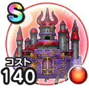

ギガパレス
4.5周年記念ウォークフェスこころ最大コスト+4スキルの斬撃・体技ダメージ+5%ギラ属性ダメージ+7%ジバリア属性ダメージ+5%ヒャド属性ダメージ+3%斬撃・体技耐性+1% / 7.5点
くわしい特徴
【ランク特殊効果】 こころ最大コスト+4スキルの斬撃・体技・ブレスダメージ+7%ギラ属性ダメージ+10%ジバリア属性ダメージ+8%ヒャド属性ダメージ+5%斬撃・体技耐性+5%3%の確率で自分が受けた呪文を敵に跳ね返す3%の確率で自分が受けたブレスを敵に跳ね返すこころ最大コスト+4スキルの斬撃・体技ダメージ+5%ギラ属性ダメージ+7%ジバリア属性ダメージ+5%ヒャド属性ダメージ+3%斬撃・体技耐性+1%